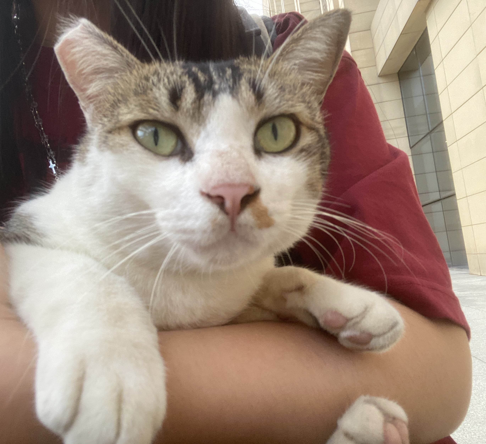
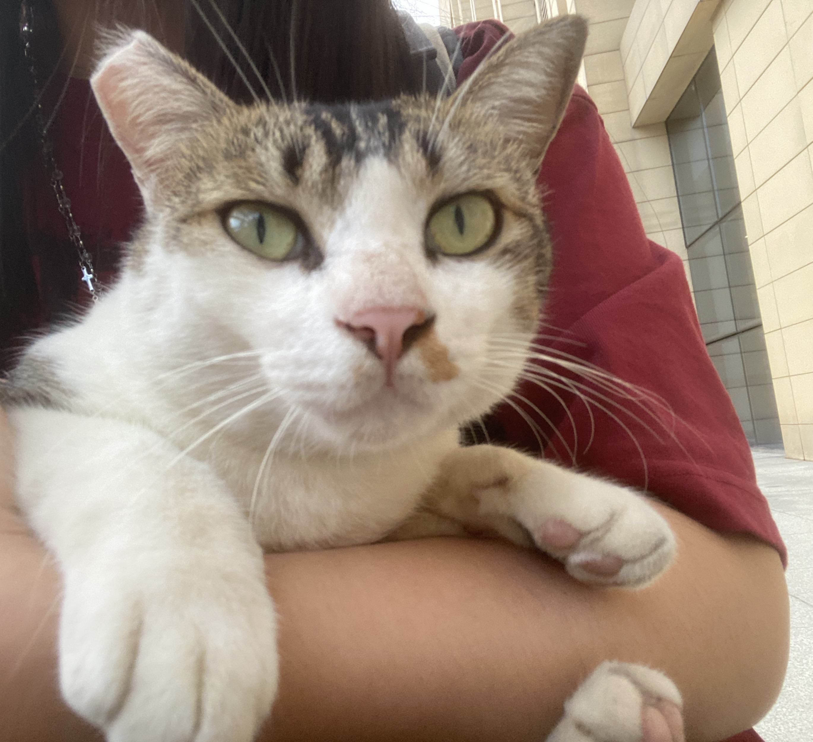

My research subjects include, but are not limited to:
Public opinion
Older adults
Individuals with intellectual disabilities
Siblings of individuals with intellectual disabilities
Substance users
Technical & Research Skills:
Qualitative Research & Analysis:
Experienced in conducting in-depth interviews,
and skilled in qualitative data coding and theory building using the grounded theory approach.
Data Analysis & Visualization:
Proficient in Python for semantic network analysis, social network analysis, topic modeling, etc.
Experienced in agent-based modeling (ABM) and capable of creating interactive visualizations
using D3.js, Plotly, and Matplotlib.
Media Production:
Proficient in Adobe Premiere Pro, Photoshop, After Effects, Audition, as well as Autodesk Maya.
Skilled in directing, scriptwriting, shooting, and editing.
Front-End Development:
Skilled in HTML development.
My goal is to ensure that information can be accurately understood by people and that technology can better adapt to individuals with diverse characteristics through an interdisciplinary perspective!
Publications
Peng, N., & Zhao, T. F. (2025).
Unveiling Risk Evolution Mechanisms Driven by Deepfake Technologies.
In Proceedings of the 12th International Conference on Machine Intelligence Theory and Applications (MiTA 2025), IEEE, May 2025.
https://doi.org/10.1109/MiTA66017.2025.11100255
Peng, N., & Zhi, T. R. (under review).
The Double-Edged Sword of Media Literacy: Reflections on Fraud Susceptibility and Trust Mechanisms Among Older Adults in Deepfake Deception.Convergence.
Peng, N., Zhao, T. F., & Zhi, T. R. (under review).
Trust Hierarchy in Deepfake Deception: A Grounded Theory Analysis of Global Cases.Information, Communication & Society.
Peng, N. (2022).
"Building Mechanisms to Bridge the Digital Divide Among Older Adults: An Age-Friendly Perspective (老年群体“数字鸿沟”弥合机制的构建——基于适老化的视角).
New Media Studies (新媒体研究), 8(13), 67–69+92.
https://doi.org/10.16604/j.cnki.issn2096-0360.2022.13.008
Peng, N. (2023).
Research on Identity Avoidance and Social Integration of Siblings of Individuals with Intellectual Disabilities from a Technology-Empowerment Perspective.
Paper presented at the 8th Guangdong Postgraduate Forum on Journalism and Communication. (Third Prize)
Research Projects
Elderly Fraud Prevention Simulation with Large Language Models (LLMs) Project Leader · Dec 2024 – Present
Show Details
Designed a simulation system integrating LLMs to evaluate elderly susceptibility to deepfake scams.
Constructed four personas from 48 interviews; extracted dominant scam strategies using SHAP-based feature interactions from media reports.
Incorporated GPT API to dynamically generate scammer dialogues and victim responses.
Modeled trust patterns and scam susceptibility across personas under different strategies and interventions.
Identified differentiated impacts of family reminders, authority warnings, and other intervention measures on various elderly groups.
Multidimensional Feature Analysis and Temporal Forecasting of Deepfake-related Weibo Discussions Project Leader · Mar 2025 – Jun 2025
Show Details
Collected 88,273 Weibo posts (2017–2025) on the topic of “deepfake.”
Identified four evolutionary stages of public discussion and shifts in sentiment from curiosity → panic → rationality → caution; extracted three dominant themes: technology applications, privacy ethics, and scam risks.
Proposed a replicable “time–sentiment–topic–forecast” framework to support platform alert systems and governance policy.
Multi-platform Public Opinion Data Collection and Visualization Tool Co-developer · Oct 2024 – Feb 2025
Show Details
Built a one-stop platform to collect posts and comments from major Chinese and international media platforms (Twitter, Weibo, and others).
Developed modules for thematic river visualization, word frequency, and word cloud analysis.
Multidimensional Feature Analysis and User Behavior in Public Health Opinion Formation Principal Investigator · Dec 2024 – Mar 2025
Show Details
Analyzed 154,547 Weibo posts on “H1N1 flu” using a three-dimensional framework (“content–sentiment–user”).
Conducted semantic network analysis and BERTopic modeling to extract 10 themes with a four-level hierarchy.
Applied SnowNLP for sentiment quantification and identified amplification effects of KOLs and institutional accounts.
Provided actionable recommendations for public health crisis communication and opinion monitoring.
Causes, Media Expressions, Social Network Structures, and Intervention Simulations of Substance Abuse among Chinese Women: Evidence from the Weibo Overdose Community Project Leader · Aug 2025 – Present
Show Details
Conducted in-depth interviews with Chinese female overdose users.
Implemented semantic and social network analysis of Weibo posts.
Designed and ran agent-based modeling (ABM) simulations to evaluate intervention strategies.
International Communication Capacity Building in Guangdong Province Research Assistant · Apr 2025 – Present
Show Details
Contributed to cross-platform opinion data scraping, cleaning, analysis, and visualization.
Covered regions including Guangdong, Beijing–Tianjin–Hebei, and the San Francisco Bay Area.
Supported evaluation of communication effectiveness and provided strategic recommendations for provincial authorities.
Constructive Communication: Governance and Transformation of Online Communities Research Assistant · Jun 2021 – Jun 2022
Show Details
Focused on sports reporting and aging-friendly communication as two case studies.
Contributed to two independent publications: one on media gaze in sports and another on the digital divide among older adults.
China Livelihood Survey 2021 Field Researcher · Sep 2021 – Oct 2021
Show Details
Conducted multiple rounds of pilot testing to optimize questionnaire logic and wording.
Applied a “ask–explain–probe–record–feedback” loop method in structured interviews during fieldwork.
Led abnormal data screening and follow-up calls, significantly improving data accuracy.
Authored a research report based on validated data, which was awarded Third Prize by the Development Research Center of the State Council.
Work Experience
Youth Engagement Committee, Special Olympics East Asia Member · Aug 2023 – Present
Show Details
Assisted in organizing the 2023 Special Olympics East Asia Athlete Leadership Training.
Supported YEC in promoting Special Olympics and disability inclusion in China.
Designed, filmed, and edited promotional videos for inclusion campaigns.
AGI Media Intelligence Application R&D Center, Jinan University Research Assistant · Jun 2024 – Jun 2025
Show Details
Conducted research on AI-driven media applications, focusing on computational communication and generative AI.
Supported data collection, analysis, and experimental design for interdisciplinary projects.
Assisted in organizing academic seminars and frontier lectures to promote scholarly exchange.
Inclusion Factory Media & Communications Intern · Jun 2023 – Sep 2023
Show Details
This is a social enterprise where production employees are individuals with intellectual and developmental disabilities.
Produced content for the company’s WeChat Official Account and video channel.
Assisted in organizing corporate events and inclusive activities.
Youth League Committee, Nanjing Forestry University Assistant Head of Cultural Affairs · Sep 2020 – Jun 2021
Show Details
Assisted in organizing student cultural activities and coordinating university-wide events.
Contributed to youth engagement programs and promoted campus cultural development.
Video Works
The Mysterious Encounter – Won the Third Prize (National) and First Prize (Provincial) in the China Collegiate Computing Design Competition (2022), Digital Media Animation & Short Film Category.
The Beauty of Difference – A Promotional Film by the Family Support Group for Individuals with Intellectual Disabilities.
Eliminating Poverty: A Mini Science Video – Second Prize, Jiangsu Province, National College Digital Art Competition (NCDA) – United Nations Sustainable Development Goals (SDGs) Public Welfare Category.
Zero Hunger – Third Prize, Jiangsu Province, National College Digital Art Competition (NCDA) – United Nations Sustainable Development Goals (SDGs) Public Welfare Category.
Awards & Honors
National Scholarship (Top 1% honor, Ministry of Education of China), 2021–2022.
Third Prize & Outstanding Researcher,
China Livelihood Survey 2021, Development Research Center of the State Council, 2021.
Third Prize (Paper):Research on Identity Avoidance and Social Integration of Siblings of Individuals with Intellectual Disabilities from a Technology-Empowerment Perspective,
8th Guangdong Postgraduate Forum on Journalism and Communication, 2023.
Volunteer Service Certificate, People’s Government of Jiangsu Province, 2021.
Outstanding Graduate, Nanjing Forestry University (Undergraduate level).
Merit Student Award (awarded for three consecutive years), Nanjing Forestry University (Undergraduate level).
Second-Class Scholarship, Jinan University (Postgraduate level).
Beyond Academics
I love music (especially R&B🎵), piano🎹, literature📖, and traveling🌍. I began learning piano at the age of five and earned the Level 10 Certificate from the Shanghai Conservatory of Music before finishing elementary school. During my undergraduate years, I often performed at university events and concerts. I’m also an avid reader of Latin American literature and deeply drawn to magical realism. Gabriel García Márquez is my favorite author. My MBTI type is ENTP. I’m outgoing, quick to connect with people from different backgrounds, and enjoy sharing interesting stories with friends.
 
